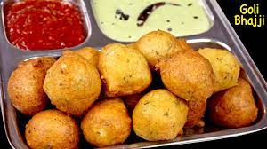

INGREDIENTS:
- 400 gms Wheat Flour
- 3/4 Cup Curd
- 2 tbsp Bombay Rava (Semolina)
- 1 tbsp Sugar
- 1- 1 ¼ tsp tbsp Cooking Soda
- Salt (as per taste)
- 1/2 litre Water
- 1 tbsp Zeera (Cumin)
- 1 tbsp Green Chilli (Finely cut)
- 2 tbsp Fresh Coconut (Finely diced)
- 2 Sprigs Curry Leaves (Finely chopped)
- Oil (For frying)
INSTRUCTIONS:Put the cooking Soda into the curds. The Curds will foam richly. Now add Semolina, salt and sugar into the curds.
Mix in the wheat flour with sufficient water and beat well for 4-5 minutes.
Wipe the edges of the vessel in which the flour and curds mixture has been mixed. Close the lid and leave to rest for at least 2-3 hours.
This will ensure that the Bondas will turn out nice and fluffy.
After 2 hours, add the rest of the ingredients and beat well again.
Wet the hand well. Shake out excess water. Take a handful of the dough and squeeze out small balls into the hot oil.
(Look at the tips if you like to use a spoon to shape the Bondas).
Fry the Bondas on medium flame. Turn up the flame and fry to get brown and crisp Bondas.
The Bondas go well when accompanied with Coconut or Ginger chutney, and Sambar.